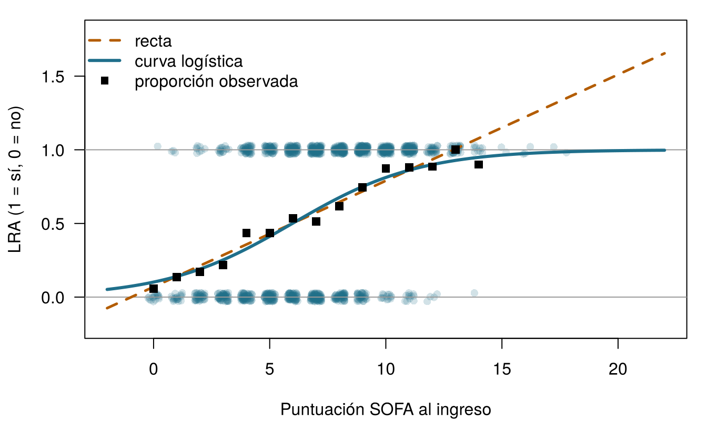
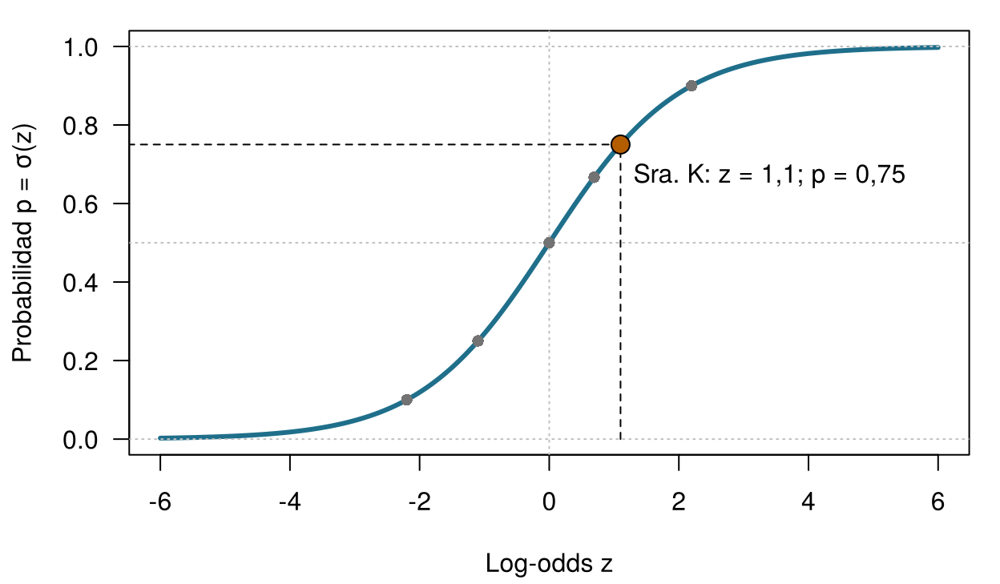
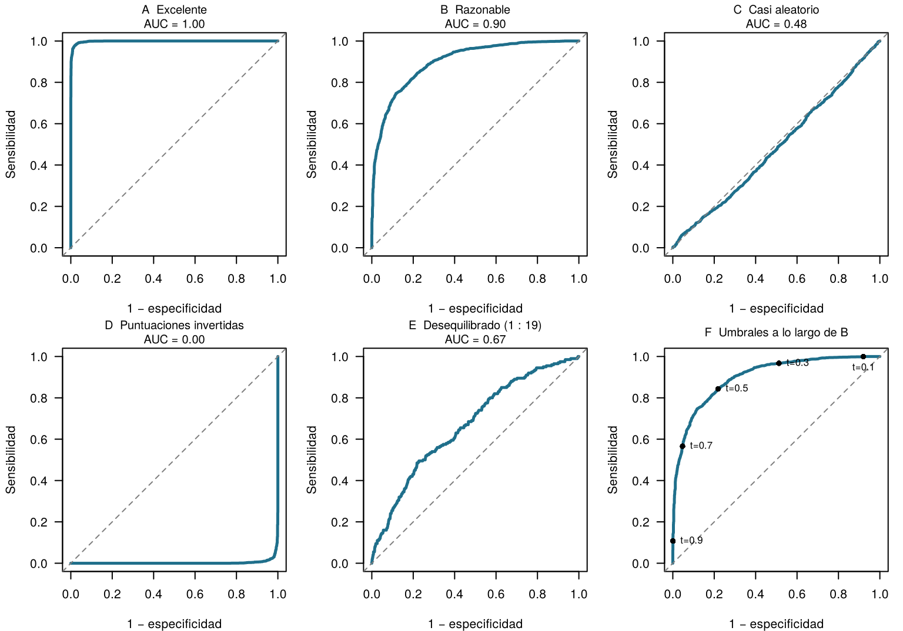
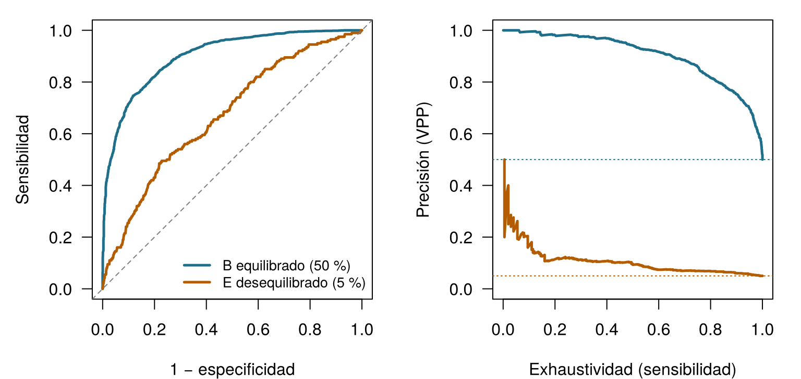
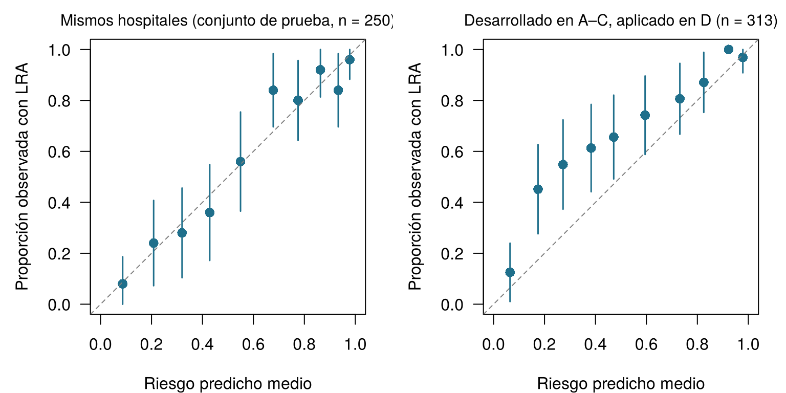

5 Clasificación, umbrales y calibración
Cuatro preguntas para calentar. Arriesga tu mejor respuesta: todas se responden en el capítulo.
| Pregunta | Tu respuesta |
|---|---|
| Una probabilidad de 0,75 corresponde a unas odds de … (escribe un número) | |
| Unas odds de 1 ("al cincuenta por ciento") corresponden a una probabilidad de … (escribe un número) | |
| La alerta se dispara cuando el riesgo predicho supera un umbral. ¿Quién debería elegir el umbral? | |
| Un modelo asigna un 30 % a un grupo de 100 pacientes. Está bien calibrado si … |
Cómo usar este capítulo
¿Empiezas aquí?
Este capítulo toma prestadas algunas ideas de capítulos anteriores. En resumen:
- Umbral de decisión (Sección 1.5). En el Capítulo 1, el equipo de la UCI Sala 7 comparó el valor esperado de iniciar un paquete de protección renal con el de la atención habitual. Con sus puntuaciones, el paquete era la mejor opción siempre que la probabilidad de LRA superara 0,25: el umbral.
- Conjuntos de entrenamiento y de prueba (Sección 1.8, Definición 1.9). Un modelo se evalúa en pacientes que no se usaron para construirlo; las decisiones tomadas durante su construcción se evalúan mediante validación cruzada. El Capítulo 3 convierte esto en rutina y advierte sobre la fuga de información: información sobre el desenlace que se cuela en los predictores.
- Sensibilidad, especificidad, VPP y VPN (Capítulo 2). En una prueba de sí/no, la sensibilidad es la proporción de personas con la condición que dan positivo, la especificidad es la proporción de personas sin ella que dan negativo, y el valor predictivo positivo (negativo) es la proporción de resultados positivos (negativos) que son correctos. Los valores predictivos dependen de la prevalencia; la sensibilidad y la especificidad, no.
- Verosimilitud y pérdida esperada (Capítulo 2). La verosimilitud mide lo probables que son los datos observados con unos valores dados de los parámetros; la máxima verosimilitud elige los valores que hacen más probables los datos. La pérdida esperada pondera cada error posible por su probabilidad.
- Regresión lineal, coeficientes, ridge y lasso (Capítulo 4). Un modelo lineal predice \(\hat y = \beta_0 + \beta_1 x_1 + \dots + \beta_p x_p\); las penalizaciones encogen los coeficientes para combatir el sobreajuste.
| Ejemplo | Quién o qué | Desenlace | Caras que vas a conocer |
|---|---|---|---|
| 1 UCI Sala 7 | 1250 pacientes de UCI en 4 hospitales | variación de la creatinina en 48 h (lesión renal aguda si ≥ 0,3 mg/dL) | Aoife (71 años, sepsis, riesgo limítrofe), Tomás (54 años, riesgo bajo), Priya (38 años, riesgo alto); la Dra. Emma Walsh; Seán, el farmacéutico |
| 2 Ensayo ONCO-1 | 1000 pacientes aleatorizados a quimioterapia o no | reducción del tumor (%) | pacientes #0042 y #0917 |
| 3 HomeBeat | 500 personas que llevan un reloj inteligente en casa | puntuación de estrés, evento de deterioro | Lena |
| 4 CellWorks | 420 lotes de producción de una terapia celular | puntuación de potencia | lote CW-118 |
Los cuatro conjuntos de datos son simulados y pueden descargarse en el apéndice de datos. La presentación completa está en la Sección 1.1.
Este capítulo convierte la salida de un modelo en una decisión. Conocerás el modelo logístico, el lenguaje de las odds y las herramientas para evaluar un clasificador: la matriz de confusión, las curvas ROC y de precisión-exhaustividad, la calibración y las curvas de decisión. Tiene trece secciones y un Laboratorio, siete comprobaciones rápidas, tres widgets “Pruébalo”, un desafío y tres misiones de programación en R y Python. Calcula unas dos horas.
La notación de un vistazo (solo para consulta)
| Símbolo | Significado | Sección |
|---|---|---|
| \(p\), \(\hat p\) | probabilidad del evento (aquí, LRA) y su estimación por un modelo | Sección 5.2 |
| \(z\) | predictor lineal \(\beta_0 + \beta_1 x_1 + \dots + \beta_p x_p\), en la escala de las log-odds | Sección 5.3 |
| \(\sigma(z)\) | función logística (sigmoide) \(1/(1+e^{-z})\) | Sección 5.3 |
| \(\beta_j\), \(e^{\beta_j}\) | coeficiente de la característica \(j\) y su odds ratio | Sección 5.4 |
| \(t\) | umbral de clasificación | Sección 5.6 |
| TP, FP, FN, TN | verdaderos positivos, falsos positivos, falsos negativos, verdaderos negativos | Sección 5.6 |
| \(C_{\text{FP}}\), \(C_{\text{FN}}\) | daño de un falso positivo, de un falso negativo | Sección 5.9 |
| NB\((t)\) | beneficio neto (net benefit) en el umbral \(t\) | Sección 5.11 |
En este capítulo, \(p\) es una probabilidad. En otras partes del libro, \(p\) también cuenta características; el contexto siempre deja claro qué sentido tiene. La lista completa está en la página de notación.
5.1 De números a sí o no
En los Capítulos 1 y 4, el desenlace de la UCI Sala 7 era un número: el cambio de la creatinina en 48 horas. Pero Emma no actúa a partir de un número; actúa a partir de una pregunta con dos respuestas. ¿Desarrollará Aoife una LRA? Según el criterio KDIGO, LRA significa un aumento de al menos 0,3 mg/dL en 48 horas (Kidney Disease: Improving Global Outcomes (KDIGO) Acute Kidney Injury Work Group 2012), así que podemos convertir el registro de cada paciente anterior en un desenlace binario: \(y_i = 1\) si el paciente \(i\) desarrolló LRA e \(y_i = 0\) en caso contrario. De los 1250 pacientes anteriores, la desarrollaron el 58 %.
Predecir una categoría en lugar de un número se llama clasificación. Un clasificador puede devolver una etiqueta (“LRA” o “sin LRA”), pero los útiles devuelven una probabilidad, \(\hat p\), y dejan la etiqueta para un paso posterior. Este capítulo trata de los dos pasos: cómo estimar \(\hat p\) y cómo convertirla en una decisión.
¿Por qué no usar simplemente la regresión lineal del Capítulo 4, con \(y\) codificada como 0 y 1? Esto se llama modelo de probabilidad lineal, y la Figura 5.1 muestra su problema. La recta ajustada a la LRA (0/1) frente al SOFA predice sin inmutarse “probabilidades” mayores que 1 para los pacientes más graves: 1,37 con una puntuación SOFA de 18. Con una característica que empujara el riesgo en sentido contrario, bajaría de 0 con la misma tranquilidad. Una probabilidad no puede salir del intervalo de 0 a 1; necesitamos una curva que tampoco pueda.
La recta de la Figura 5.1 predice un valor de alrededor de 1,5 para un paciente con una puntuación SOFA de 20. ¿Cuál es la mejor lectura?
5.2 Probabilidad, odds y log-odds
Para construir una curva que se quede entre 0 y 1, damos un rodeo por una escala que los apostadores usan desde hace siglos: las odds (término inglés que en epidemiología se usa tal cual).
Definición 5.1 (Odds y log-odds) Las odds de un evento con probabilidad \(p\) son \(\dfrac{p}{1-p}\): cuántas veces es más probable que el evento ocurra que no ocurra. Las log-odds (o logit) son el logaritmo natural de las odds, \(\operatorname{logit}(p) = \log\dfrac{p}{1-p}\). Las probabilidades viven entre 0 y 1, las odds entre 0 e infinito, y las log-odds en cualquier punto de la recta numérica.
Una probabilidad de 0,75 significa unas odds de \(0{,}75/0{,}25 = 3\), “tres a uno”: es tres veces más probable que el evento ocurra que no ocurra. Unas odds iguales a 1 (al cincuenta por ciento) corresponden a una probabilidad de 0,5 y a unas log-odds de 0. La Tabla 5.1 muestra algunos valores más; fíjate en la simetría de la última columna.
| Probabilidad \(p\) | Odds \(p/(1-p)\) | En palabras | Log-odds |
|---|---|---|---|
| 0.10 | 0.11 | 1 a 9 | -2.2 |
| 0.25 | 0.33 | 1 a 3 | -1.1 |
| 0.50 | 1.00 | 1 a 1 (al cincuenta por ciento) | +0.0 |
| 0.67 | 2.00 | 2 a 1 | +0.7 |
| 0.75 | 3.00 | 3 a 1 | +1.1 |
| 0.90 | 9.00 | 9 a 1 | +2.2 |
¿Por qué tanto esfuerzo? Porque la escala de las log-odds no tiene paredes. Una recta puede ir de \(-\infty\) a \(+\infty\) sin producir nunca un valor imposible, y cada valor de log-odds corresponde exactamente a una probabilidad entre 0 y 1.
En la UCI Sala 7, el 58 % de los pacientes anteriores desarrolló LRA. ¿Cuáles son las odds de LRA de un paciente elegido al azar?
5.3 El modelo logístico
La regresión logística coloca la recta del Capítulo 4 en la escala de las log-odds (Cox 1958; Hosmer, Lemeshow, y Sturdivant 2013):
\[ \log\frac{p}{1-p} \;=\; z \;=\; \beta_0 + \beta_1 x_1 + \beta_2 x_2 + \dots + \beta_p x_p . \qquad(5.1)\]
El lado derecho, \(z\), se llama predictor lineal. Despejar \(p\) en la Ecuación 5.1 da la probabilidad:
\[ p \;=\; \sigma(z) \;=\; \frac{1}{1 + e^{-z}} . \qquad(5.2)\]
Definición 5.2 (Función logística y regresión logística) La función logística (o sigmoide) \(\sigma(z) = 1/(1+e^{-z})\) convierte cualquier número \(z\) en una probabilidad entre 0 y 1, siguiendo una curva en forma de S. La regresión logística modela la probabilidad de un desenlace binario como \(p = \sigma(\beta_0 + \beta_1 x_1 + \dots + \beta_p x_p)\): lineal en la escala de las log-odds, en forma de S en la escala de la probabilidad.
La Figura 5.2 muestra la curva. Piensa en la Sra. K, de 68 años, que llega a urgencias con sospecha de infección, un lactato de 5,2 mmol/L y el sistema inmunitario debilitado. Supón que un modelo de sepsis suma sus características en un predictor lineal \(z = +1{,}1\). Entonces \(p = 1/(1+e^{-1{,}1}) = 0,75\). El modelo está diciendo que, entre muchos pacientes como la Sra. K, unos tres de cada cuatro desarrollan sepsis. Es una probabilidad, no un diagnóstico: la propia Sra. K desarrollará sepsis o no, y qué hacer ante un riesgo del 75 % es otra cuestión, el tema de la Sección 5.9.

¿Cómo se encuentran los coeficientes \(\beta\)? No por mínimos cuadrados. La regresión logística usa la máxima verosimilitud (consulta el Capítulo 2): entre todos los valores posibles de \(\beta\), elige los que hacen más probables los desenlaces que realmente observamos. Para un paciente que desarrolló LRA, el modelo debería dar un \(\hat p_i\) alto; para uno que no la desarrolló, un \(1-\hat p_i\) alto. Maximizar la verosimilitud es lo mismo que minimizar la pérdida logarítmica (log-loss), la sorpresa media del modelo ante lo que realmente ocurrió:
\[ \text{log-loss} = -\frac{1}{n}\sum_{i=1}^{n}\Big[\,y_i \log \hat p_i + (1-y_i)\log(1-\hat p_i)\Big]. \qquad(5.3)\]
Un modelo que dice 0,99 a un paciente que luego no desarrolla LRA paga un precio alto, \(-\log(0{,}01) \approx 4{,}6\); uno que dice 0,6 a un paciente que sí la desarrolla paga solo \(-\log(0{,}6) \approx 0{,}5\). Este es el paso de “corregir” del ciclo de aprendizaje del Capítulo 1 (adivinar, corregir, ajustar, repetir): el error cuadrático corrige una conjetura sobre un número; la log-loss corrige una conjetura sobre sí o no. A diferencia de los mínimos cuadrados, no hay una fórmula que dé el mejor \(\beta\) en un solo paso; el programa los ajusta de forma iterativa hasta que la log-loss deja de bajar (Hastie, Tibshirani, y Friedman 2009, cap. 4). Puedes hacerlo a mano.
Ajusta la curva en S a mano. Los puntos son los 1250 pacientes de la UCI Sala 7 (LRA = 1 arriba, sin LRA = 0 abajo) y los cuadrados muestran la proporción observada con LRA en cada puntuación SOFA. Tu modelo es \(\hat p = \sigma(\beta_0 + \beta_1 \times \text{SOFA})\). Mueve los controles deslizantes y observa la log-loss. Un modelo que ignora el SOFA y da a todos el riesgo medio tiene una log-loss de alrededor de 0,68. Objetivo: bajar la log-loss de 0,58.
La mejor curva que puedes encontrar solo con el SOFA tiene una log-loss de alrededor de 0,57, y su pendiente es positiva: cada punto más de SOFA aumenta las log-odds de LRA. Con más características, el programa hace la misma búsqueda en muchas dimensiones a la vez.
La regresión logística también puede dibujarse como una pequeña red (Figura 5.3): cada característica se multiplica por un peso, los productos se suman a una constante y la suma pasa por la sigmoide. Esto es exactamente una única neurona artificial. En el Capítulo 7 apilamos muchas de ellas para construir redes neuronales y, cuando hay más de dos clases (normal, neumonía, tuberculosis), la sigmoide se sustituye por su generalización a muchas clases, la softmax, que devuelve una probabilidad por clase (Goodfellow, Bengio, y Courville 2016, cap. 6). La misma softmax elige la siguiente palabra en los modelos de lenguaje de la Parte V.
flowchart LR
x1["x₁ (SOFA)"] --> w1["× β₁"]
x2["x₂ (lactato)"] --> w2["× β₂"]
xp["xₚ (…)"] --> wp["× βₚ"]
w1 --> SUM
w2 --> SUM
wp --> SUM
SUM["z = β₀ + Σ βⱼxⱼ"] --> ACT["σ(z)"]
ACT --> y["p̂ = probabilidad de LRA"]
5.4 Leer un modelo ajustado: odds ratios
Antes de ajustar el modelo de la UCI Sala 7, un pequeño ejemplo resuelto muestra cómo leer los coeficientes logísticos. Supón que, de 200 pacientes con sospecha de infección, 100 estaban inmunodeprimidos y 100 no (Tabla 5.2).
| Sepsis | Sin sepsis | Riesgo | Odds | |
|---|---|---|---|---|
| Inmunodeprimidos | 30 | 70 | 30/100 = 0,30 | 30/70 = 0,43 |
| No inmunodeprimidos | 12 | 88 | 12/100 = 0,12 | 12/88 = 0,14 |
Definición 5.3 (Odds ratio) La odds ratio (OR, razón de odds) compara las odds de un evento en dos grupos: \(\text{OR} = \text{odds}_1 / \text{odds}_0\). Una OR mayor que 1 significa odds más altas en el grupo 1; menor que 1, odds más bajas; y exactamente 1, ninguna diferencia. En la regresión logística, \(e^{\beta_j}\) es la odds ratio para un aumento de una unidad en la característica \(x_j\), manteniendo fijas las demás características.
En la Tabla 5.2, la odds ratio es \(0{,}43 / 0{,}14 \approx 3{,}1\): las odds de sepsis son unas tres veces mayores en los pacientes inmunodeprimidos. Una regresión logística de la sepsis sobre el estado inmunitario devolvería un coeficiente de \(\log 3{,}1 \approx 1{,}13\), y \(e^{1{,}13} \approx 3{,}1\) nos devuelve al punto de partida. Observa que la razón de riesgos (el cociente entre las probabilidades) es solo \(0{,}30/0{,}12 = 2{,}5\). La odds ratio y la razón de riesgos solo se parecen cuando el desenlace es raro; para desenlaces frecuentes, la odds ratio se aleja más de 1 y no debe leerse como “tres veces el riesgo” (Zhang y Yu 1998). La LRA en la UCI Sala 7 es cualquier cosa menos rara.
Ahora, el caso real. La Tabla 5.3 muestra una regresión logística para la LRA ajustada a los 1000 pacientes de entrenamiento de la UCI Sala 7, con cinco características del ingreso. Cada odds ratio se presenta para una unidad de cambio con sentido clínico: el tamaño de una odds ratio depende de la unidad, igual que “por gramo” y “por kilogramo” dan números distintos para el mismo fármaco.
| Característica | Coeficiente β | Unidad | Odds ratio | IC 95 % |
|---|---|---|---|---|
| Puntuación SOFA | 0.403 | 1 punto | 1.50 | 1.40 a 1.60 |
| Lactato | 0.297 | 1 mmol/L | 1.35 | 1.14 a 1.59 |
| Presión arterial media mínima | -0.036 | 10 mmHg | 0.70 | 0.60 a 0.82 |
| Creatinina basal | 2.341 | 0,5 mg/dL | 3.22 | 2.55 a 4.07 |
| Adherencia al protocolo | -2.642 | 10 puntos porcentuales | 0.77 | 0.70 a 0.85 |
Lee la tabla fila por fila. Cada punto más de SOFA multiplica las odds de LRA por 1,50, manteniendo fijas las otras cuatro características. Una presión arterial mínima 10 mmHg más alta las multiplica por 0,70: mejor perfusión, odds más bajas. Una creatinina basal 0,5 mg/dL más alta las multiplica por 3,22, y 10 puntos porcentuales más de adherencia al protocolo, por 0,77. Valen dos advertencias de capítulos anteriores. Son asociaciones: el Capítulo 1 mostró que el coeficiente de la adherencia está confundido por la gravedad si la gravedad no está en el modelo (Sección 1.10). Y una odds ratio multiplica odds, no probabilidades: la misma OR desplaza un riesgo del 10 % mucho menos, en términos absolutos, que uno del 50 %.
Aplicado a los pacientes de esta noche, el modelo da los riesgos de la Tabla 5.4. Se parecen a los valores ilustrativos usados en el Capítulo 1: Aoife está en el límite, Tomás tiene un riesgo bajo y Priya, un riesgo muy alto.
| Paciente | Modelo de cinco características | Modelo solo con SOFA |
|---|---|---|
| Aoife Byrne | 0.49 | 0.50 |
| Tomás Ruiz | 0.07 | 0.25 |
| Priya Nair | 0.99 | 0.90 |
Un modelo de sepsis publicado informa, para los pacientes vacunados contra la gripe, un coeficiente de −0,36 (odds ratio de 0,70). ¿Qué lectura es correcta?
De los coeficientes a las odds ratios. El modelo de LRA de cinco características ya está ajustado (con los 1000 pacientes de entrenamiento de la partición compartida, como en la Tabla 5.3), como fit en R y model en Python. Sus coeficientes están en la escala de las log-odds. Rellena el hueco con la función que los convierte en odds ratios.
La inversa del logaritmo natural es la función exponencial, exp().
round(exp(coef(fit)), 2)La inversa del logaritmo natural es np.exp().
pd.Series(np.round(np.exp(model.coef_[0]), 2), index=features)5.5 Un segundo ejemplo: ¿quién responde en ONCO-1?
En el ensayo ONCO-1, los pacientes se aleatorizaron a quimioterapia o a ninguna quimioterapia, y el tamaño del tumor se midió antes y después. Un paciente es un respondedor alto si el tumor se redujo al menos un 30 %, una regla inspirada en los criterios RECIST de respuesta parcial (Eisenhauer et al. 2009). La columna binaria high_response lo registra. La Tabla 5.5 muestra el desenlace por brazo de tratamiento en la versión del ensayo que se usa en el navegador.
| Brazo | No respondedores altos | Respondedores altos | Total |
|---|---|---|---|
| Quimioterapia | 104 | 392 | 496 |
| Sin quimioterapia | 502 | 2 | 504 |
Solo 2 de los 504 pacientes no tratados fueron respondedores altos. Por tanto, la odds ratio de la quimioterapia es enorme, alrededor de 950, y una regresión logística devuelve un coeficiente cercano a 6,9 con un intervalo de confianza muy amplio. No lo leas como “la quimioterapia multiplica las odds de respuesta por casi mil”. Cuando un grupo casi no tiene eventos, los datos se acercan a la separación: una característica (aquí, el tratamiento) predice el desenlace casi a la perfección, y la estimación de máxima verosimilitud se desplaza hacia el infinito; con separación perfecta, ni siquiera existe (Albert y Anderson 1984). El resumen honesto es “casi nadie responde sin quimioterapia”, no una odds ratio precisa. La estimación penalizada (Sección 5.12) o la verosimilitud con reducción del sesgo de Firth (Firth 1993) dan estimaciones finitas y más sensatas.
La pregunta clínicamente interesante es otra: entre los pacientes que reciben quimioterapia, ¿quién responde? Se trata de una decisión sobre a quién tratar, o a quién tratar con otra cosa. Ajustado a los 412 pacientes con quimioterapia del conjunto de entrenamiento compartido del libro, con la intensidad de dosis, el grado tumoral, el estado funcional (performance status), la edad y tres genes, el modelo da las odds ratios de la Tabla 5.6. Los genes se miden en desviaciones típicas, así que sus odds ratios comparan pacientes separados por una desviación típica.
| Característica | Coeficiente β | Odds ratio |
|---|---|---|
| Intensidad de dosis (por 0,1) | 1.23 | 3.4e+00 |
| Grado tumoral G2 frente a G1 | 0.66 | 1.9e+00 |
| Grado tumoral G3 frente a G1 | 2.60 | 1.3e+01 |
| Puntuación funcional (por punto; mayor = peor) | -1.37 | 2.5e-01 |
| Edad (por 10 años) | 0.69 | 2.0e+00 |
| gene_01 (por DT) | 3.54 | 3.5e+01 |
| gene_05 (por DT) | -7.47 | 5.7e-04 |
| gene_12 (por DT) | 2.54 | 1.3e+01 |
Una dosis mayor y un grado más alto van con odds de respuesta más altas, y una puntuación funcional peor, con odds más bajas; gene_01 y gene_12 aumentan las odds y gene_05 las reduce mucho. En este ensayo simulado, los pacientes de más edad responden algo más a menudo. Así se generaron los datos, no es una afirmación clínica, y es un recordatorio para contrastar cada signo con lo que esperas. Fíjate también en lo que no está en el modelo: los genes 08, 14 y 19. En la simulación son copias ruidosas de la propia reducción del tumor, la trampa de la fuga de información descrita en el Capítulo 3. Un modelo que los usara parecería excelente y sería inútil, porque solo se “conocen” cuando ya se conoce la respuesta.
Los pacientes #0042 y #0917, a quienes conocimos en el Capítulo 4, son dos de los pacientes con quimioterapia del conjunto de prueba, así que el modelo se ajustó sin ellos. Sobre el papel se parecen: la misma intensidad de dosis (1,07), tumores de grado G1, la misma puntuación funcional (2), y edades de 37 y 46 años. Sus respuestas fueron distintas: el tumor de #0042 se redujo un 36,6 % (respondedor alto), el de #0917 un 20,4 % (no respondedor alto). El modelo de la Tabla 5.6 les da probabilidades de respuesta alta de 0,78 y 0,02: la dirección correcta, pero un “no” casi seguro para un paciente cuyo perfil clínico es casi idéntico al de un respondedor, impulsado por pequeñas diferencias en tres genes. El modelo lasso de la Sección 5.12, el modelo principal del capítulo para ONCO-1, es más prudente: 0,75 y 0,18. Como en el caso de Aoife, el modelo aporta información. Si hubiera estado disponible antes del tratamiento, lo que el oncólogo y cada paciente habrían hecho con una probabilidad del 18 % de respuesta alta, teniendo en cuenta la toxicidad del tratamiento y las alternativas, es una decisión que requiere sus valores, y dos pacientes que parecen iguales sobre el papel pueden responder de forma distinta.
Un colega ajusta una regresión logística a todo el conjunto de datos de ONCO-1 y comunica: “La quimioterapia tiene una odds ratio de alrededor de 950 (IC 95 % de aproximadamente 230 a 3900).” ¿Cuál es el problema principal?
5.6 De la probabilidad a la decisión: la matriz de confusión
El modelo da a Aoife una probabilidad. La alerta en la pantalla de Emma necesita un sí o un no. El puente entre ambos es un umbral.
Definición 5.4 (Umbral de clasificación) Un umbral de clasificación \(t\) convierte una probabilidad predicha en una decisión: clasificar como positivo (y actuar) cuando \(\hat p \ge t\), y como negativo en caso contrario. El umbral no es una propiedad del modelo: el mismo modelo puede usarse con umbrales distintos para fines distintos.
Una vez fijado el umbral, cada paciente de prueba cae en una de cuatro celdas (Figura 5.4), y la tabla de recuentos es la matriz de confusión.
Definición 5.5 (Matriz de confusión, exactitud, precisión, exhaustividad y F1) La matriz de confusión cruza las clases predichas y las reales en verdaderos positivos (TP, del inglés true positives), falsos positivos (FP), falsos negativos (FN) y verdaderos negativos (TN). A partir de ella: la exactitud (accuracy) \(= (\text{TP}+\text{TN})/n\) es la proporción de clasificaciones correctas; la precisión \(= \text{TP}/(\text{TP}+\text{FP})\) es el valor predictivo positivo; la exhaustividad (recall) \(= \text{TP}/(\text{TP}+\text{FN})\) es la sensibilidad; y la puntuación F1 \(= 2 \cdot \text{precisión} \cdot \text{exhaustividad} / (\text{precisión} + \text{exhaustividad})\) es su media armónica (Fawcett 2006; Rijsbergen 1979).
La sensibilidad, la especificidad y los valores predictivos se presentaron para las pruebas diagnósticas en el Capítulo 2; el aprendizaje automático suele llamar a la sensibilidad exhaustividad (recall) y al VPP precisión. Los nombres cambian, los recuentos no. La Tabla 5.7 aplica el modelo de cinco características a los 250 pacientes de prueba de la UCI Sala 7, con el umbral de 0,5 del hospital y con el de 0,25 de Seán.
| TP | FP | FN | TN | Sensibilidad | Especificidad | VPP | VPN | Exactitud | F1 | |
|---|---|---|---|---|---|---|---|---|---|---|
| t = 0.50 | 122 | 25 | 25 | 78 | 0.83 | 0.76 | 0.83 | 0.76 | 0.80 | 0.83 |
| t = 0.25 | 140 | 63 | 7 | 40 | 0.95 | 0.39 | 0.69 | 0.85 | 0.72 | 0.80 |
Bajar el umbral de 0,5 a 0,25 detecta a más pacientes que acaban desarrollando LRA (la sensibilidad sube de 0,83 a 0,95, y los falsos negativos bajan de 25 a 7), al precio de más paquetes innecesarios (los falsos positivos suben de 25 a 63). La exactitud baja de 0,80 a 0,72; aun así, para un equipo que teme más una LRA pasada por alto que un paquete de más, 0,25 puede ser la mejor opción. La exactitud cuenta todos los errores como igual de malos, y eso rara vez es cierto en medicina. También engaña cuando una de las clases es rara: si solo el 2 % de los pacientes tuviera un evento, un “modelo” que no marca nunca a nadie tendría un 98 % de exactitud y sería inútil.
5.7 Curvas ROC y AUC
Cada umbral da una matriz de confusión, una sensibilidad y una especificidad. Deslizar \(t\) de 1 a 0 traza una curva.
Definición 5.6 (Curva ROC y AUC) La curva ROC (receiver operating characteristic, característica operativa del receptor) representa la sensibilidad (tasa de verdaderos positivos) frente a \(1-\)especificidad (tasa de falsos positivos) para cada umbral posible. El área bajo la curva ROC (AUC) la resume en un solo número: la probabilidad de que un paciente con el evento, elegido al azar, reciba un riesgo predicho mayor que un paciente sin el evento, también elegido al azar. Una AUC de 0,5 no es mejor que una moneda; 1 es una ordenación perfecta.
Merece la pena recordar la lectura probabilística de la AUC, debida a Hanley y McNeil (1982): dice que la AUC mide la discriminación, lo bien que el modelo ordena a los pacientes, y nada más. No depende del umbral, y no le importa si las probabilidades predichas son correctas en términos absolutos. Multiplicar todos los riesgos por un medio dejaría la AUC igual.
La Figura 5.5 muestra cómo son las curvas ROC en seis situaciones simuladas, sin relación con nuestros ejemplos recurrentes (Fawcett 2006). Un modelo excelente se pega a la esquina superior izquierda; uno razonable se arquea por encima de la diagonal; un modelo que adivina sigue la diagonal; un modelo invertido, cuyas puntuaciones van en sentido contrario, queda por debajo (señal de que algo en los datos o en las etiquetas está al revés: invertir sus puntuaciones lo haría excelente). El quinto panel tiene clases muy desequilibradas, un positivo por cada 19 negativos: su curva ROC parece respetable, algo a lo que volvemos en la Sección 5.8. El último panel marca los umbrales a lo largo de la curva del modelo razonable: bajar \(t\) te desplaza hacia arriba y hacia la derecha.

A menudo se citan reglas prácticas (AUC de 0,7–0,8 “aceptable”, de 0,8–0,9 “excelente”) (Hosmer, Lemeshow, y Sturdivant 2013), pero un número aislado dice poco. En el conjunto de prueba de la UCI Sala 7, el modelo de cinco características tiene una AUC de 0,85. ¿Es buena? Depende de las alternativas. El modelo solo con el SOFA llega a 0,77, y “ningún modelo” (el mismo riesgo para todos) tiene una AUC de exactamente 0,5. Esta es la regla de la referencia: todo modelo nuevo debe compararse con una referencia sencilla y con la práctica actual, en los mismos pacientes. Una AUC de 0,81 comunicada sin referencia no te ha dicho nada; una red profunda que llega a 0,83 donde la regresión logística llega a 0,82 puede no compensar su opacidad. En muchos estudios de predicción clínica, los métodos flexibles de aprendizaje automático no han superado, en promedio, a una regresión logística bien construida (Christodoulou et al. 2019).
El modelo de LRA de un proveedor tiene una AUC de 0,85 en los datos de tu hospital. ¿Qué afirmación se deduce?
5.8 Curvas de precisión-exhaustividad cuando los positivos son raros
La curva ROC tiene un punto ciego. Cada uno de sus dos ejes se calcula dentro de una clase (sensibilidad entre los pacientes con el evento, tasa de falsos positivos entre los que no lo tienen), así que la curva ROC y la AUC ignoran lo frecuente que es el evento. Cuando el evento es raro, incluso una tasa pequeña de falsos positivos puede suponer muchos falsos positivos en números absolutos, que ahogan a los verdaderos.
Definición 5.7 (Curva de precisión-exhaustividad) La curva de precisión-exhaustividad (PR) representa la precisión (VPP) frente a la exhaustividad (sensibilidad) para cada umbral. Un modelo que adivina tiene una curva PR plana a la altura de la prevalencia del evento; el área bajo la curva PR suele comunicarse junto con la AUC cuando los positivos son raros.
La Figura 5.6 compara el modelo equilibrado razonable (panel B de arriba) con el desequilibrado (panel E). En el gráfico ROC, el modelo desequilibrado parece solo mediocre; en el gráfico PR, su debilidad salta a la vista: para detectar la mitad de los positivos, marca muchos más negativos que positivos, y su precisión ronda un valor no muy superior a la prevalencia del 5 %. Para desenlaces raros, como una reacción adversa rara a un fármaco o una enfermedad rara en un cribado, comunica las curvas PR además de las ROC (Saito y Rehmsmeier 2015). La UCI Sala 7 es el caso opuesto: con LRA en más de la mitad de los pacientes, las dos curvas cuentan historias parecidas.

5.9 El umbral es un juicio de valor
Un modelo de cribado asigna a un paciente una probabilidad de 0,23 de neoplasia colorrectal avanzada. ¿Derivarlo a colonoscopia o no? El modelo no puede responder, porque la respuesta depende de lo grave que sea cada error. Un umbral más bajo detecta más enfermedad y somete a más personas sanas a un procedimiento invasivo; uno más alto las libra y pasa por alto más enfermedad. Los programas de cribado suelen inclinarse hacia la sensibilidad, porque un cáncer no detectado es mucho peor que una colonoscopia innecesaria. El punto de corte es donde los valores clínicos entran en el modelo.
El Capítulo 1 ya mostró cómo precisarlo, y el Capítulo 2 le dio el nombre de pérdida esperada. Sea \(C_{\text{FN}}\) el daño de un falso negativo (una LRA que el equipo no logró prevenir) y \(C_{\text{FP}}\) el daño de un falso positivo (un paquete innecesario), ambos en relación con una decisión correcta. Para un paciente con riesgo \(p\), actuar tiene un daño esperado \((1-p)\,C_{\text{FP}}\) y no actuar tiene un daño esperado \(p\,C_{\text{FN}}\). Actuar es mejor cuando \(p\,C_{\text{FN}} > (1-p)\,C_{\text{FP}}\), es decir, cuando \(p\) supera
\[ t^{*} = \frac{C_{\text{FP}}}{C_{\text{FP}} + C_{\text{FN}}} . \qquad(5.4)\]
Este es el enfoque del umbral en las decisiones clínicas (Pauker y Kassirer 1980). Si una LRA pasada por alto es tres veces peor que un paquete innecesario, \(t^{*} = 1/(1+3) = 0{,}25\): exactamente el umbral que el equipo de la UCI Sala 7 encontró con el widget de valor esperado de la Sección 1.5. Leída al revés, la ecuación dice lo que un umbral implica: el 0,5 del hospital dice que una LRA pasada por alto y un paquete innecesario son igual de malos. Nadie en la UCI Sala 7 lo cree. De forma equivalente, las odds en el umbral, \(t^{*}/(1-t^{*})\), son iguales al cociente de daños \(C_{\text{FP}}/C_{\text{FN}}\), un vínculo que volvemos a usar en las curvas de decisión. La Ecuación 5.4 supone que las probabilidades están calibradas; si no lo están, el umbral correcto para los números del modelo no es el umbral correcto para el riesgo del paciente (Sección 5.10).
Umbral, matriz de confusión, ROC y costes. Los 250 pacientes de prueba de la UCI Sala 7 reciben puntuaciones del modelo de cinco características. Mueve el umbral y observa la matriz de confusión, el punto en la curva ROC y el daño total. Fija el daño de una LRA pasada por alto en relación con un paquete innecesario (el juicio de valor del equipo). El daño se cuenta por cada 100 pacientes, en unidades de “un paquete innecesario”. Objetivo: encontrar un umbral cuyo daño quede a menos del 10 % del mínimo posible, con un cociente de daños distinto de 1.
Con solo 250 pacientes de prueba, el mejor umbral empírico oscila alrededor del \(t^{*}\) teórico; con un cociente de daños de 3, queda cerca de 0,25, como predice la ecuación. Fíjate en lo plana que es la curva de daño cerca de su mínimo: el umbral exacto importa menos que acertar su orden de magnitud y, por tanto, los valores que hay detrás.
¿Quién fija el umbral? ¿El proveedor que construye el modelo, el hospital que lo compra, el clínico que lo usa o el paciente que sufre las consecuencias? Un umbral escondido dentro de un software es un juicio de valor hecho en nombre de todos, a menudo por la persona menos afectada por él. La buena práctica es comunicar las probabilidades del modelo junto con su rendimiento en un intervalo de umbrales (Collins et al. 2015), acordar abiertamente los umbrales locales y, cuando sea posible, dejar que el umbral refleje los valores de cada paciente. El 0,49 de Aoife significa una cosa para un equipo que teme la diálisis y otra para uno que teme los antibióticos infradosificados.
Para cada uso de un modelo de riesgo, ¿fijarías un umbral relativamente bajo (actuar incluso con un riesgo moderado) o relativamente alto (actuar solo cuando el riesgo es grande)?
- Invitar a personas a un análisis de sangre barato y seguro como primer paso de un programa de cribado de cáncer. Umbral bajo
- Recomendar una cirugía profiláctica con complicaciones graves. Umbral alto
- Iniciar el paquete de protección renal de la UCI Sala 7 cuando una LRA pasada por alto se considera mucho peor que un paquete innecesario. Umbral bajo
- Liberar un lote de CellWorks para infusión sin más pruebas (el “evento” es que el lote sea aprobado). Umbral alto
- Marcar a participantes de HomeBeat para que reciban una llamada de una enfermera, cuando la llamada es rápida y bien recibida. Umbral bajo
- Enviar a un paciente de ONCO-1 a una biopsia tumoral adicional, una prueba invasiva que rara vez cambia el tratamiento. Umbral alto
El umbral de Seán. Las predicciones del modelo de cinco características para los 250 pacientes de prueba están cargadas como test (columnas aki y p_model). El equipo considera que una LRA pasada por alto es tres veces más dañina que un paquete innecesario. Fija el umbral que se deduce de la Ecuación 5.4 y calcula la sensibilidad y la especificidad.
\(t^{*} = C_{\text{FP}}/(C_{\text{FP}} + C_{\text{FN}}) = 1/(1+3)\).
thr <- 0.25\(t^{*} = C_{\text{FP}}/(C_{\text{FP}} + C_{\text{FN}}) = 1/(1+3)\).
thr = 0.255.10 Calibración: ¿puedes fiarte del número?
La segunda pregunta de Seán era si “50 %” significa 50 %. La AUC no puede responderla, porque solo mira el orden de las predicciones. Un modelo puede ordenar a los pacientes a la perfección y aun así anunciar riesgos sistemáticamente demasiado altos o demasiado bajos.
Definición 5.8 (Calibración) Un modelo está calibrado cuando sus probabilidades predichas coinciden con las frecuencias observadas: entre los pacientes que reciben un riesgo de alrededor del 30 %, alrededor del 30 % tienen el evento. Un gráfico de calibración agrupa a los pacientes según el riesgo predicho y representa la proporción observada con el evento frente a la predicción media de cada grupo; un modelo calibrado queda sobre la diagonal. El intercepto de calibración (o calibración global, calibration-in-the-large) comprueba si las predicciones son, en promedio, demasiado altas o demasiado bajas (ideal: 0); la pendiente de calibración comprueba si son demasiado extremas o demasiado tímidas (ideal: 1) (Van Calster et al. 2019).
La calibración ha sido llamada el talón de Aquiles de la analítica predictiva (Van Calster et al. 2019): se comunica mucho menos que la AUC y, sin embargo, un modelo mal calibrado puede llevar a decisiones dañinas, porque la Ecuación 5.4 compara el riesgo predicho con un umbral como si fuera el riesgo verdadero (Steyerberg 2019). Una medida global sencilla, que premia a la vez la discriminación y la calibración, es la puntuación de Brier, la media de las diferencias al cuadrado entre las probabilidades predichas y los desenlaces (0 es perfecto) (Brier 1950). En el conjunto de prueba de la UCI Sala 7, la puntuación de Brier del modelo es 0,149, frente a 0,242 si se da a todos el riesgo medio.
La Figura 5.7 muestra dos gráficos de calibración. A la izquierda, el modelo se comprueba en el conjunto de prueba aleatorio de los mismos cuatro hospitales: los puntos siguen de cerca la diagonal (intercepto de calibración 0,04, pendiente 1,01). A la derecha, las mismas cinco características se usaron para ajustar un modelo solo en los hospitales A–C, que luego se aplicó al hospital D, donde la LRA es más frecuente (68 % en lugar de 55 %). Su AUC en el hospital D sigue siendo 0,82, tan buena como en casa, pero sus predicciones son sistemáticamente demasiado bajas: en promedio, 54 % predicho frente a 68 % observado (intercepto de calibración 0,90). En el hospital D, un paciente señalado con un 20 % tiene en realidad un riesgo mayor, y un umbral elegido con la Ecuación 5.4 llevaría a infratratar.

La lección es general: la discriminación suele viajar mejor que la calibración. El perfil de pacientes, la práctica local y la forma de registrar los desenlaces desplazan el riesgo basal entre hospitales y a lo largo del tiempo. El remedio habitual es la recalibración: conservar los coeficientes del modelo pero volver a estimar el intercepto (y quizá la pendiente) con datos locales (Steyerberg 2019). La calibración importa mucho más allá de la regresión logística. Los modelos flexibles, como los árboles con boosting y las redes neuronales, suelen ser demasiado confiados (Niculescu-Mizil y Caruana 2005; Guo et al. 2017), y en el Capítulo 19 hacemos la misma pregunta a un modelo de lenguaje que dice estar “seguro al 90 %”.
Después de llevar el modelo al hospital D, su AUC no cambia, pero su intercepto de calibración es claramente positivo. ¿Qué significa esto para Emma, si trabaja en el hospital D?
5.11 Curvas de decisión: ¿merece la pena usar el modelo?
Ahora tenemos un modelo que discrimina, un umbral que refleja valores y una comprobación de que las probabilidades merecen confianza. Queda una pregunta, la que un hospital debería hacerse antes de activar la alerta: ¿actuar según este modelo hace más bien que mal, en comparación con las alternativas sencillas de tratar a todos o no tratar a nadie? El análisis de curvas de decisión la responde (Vickers y Elkin 2006; Vickers, Van Calster, y Steyerberg 2016).
Definición 5.9 (Beneficio neto y curva de decisión) En el umbral \(t\), el beneficio neto (net benefit) de actuar según un modelo es \[\text{NB}(t) = \frac{\text{TP}}{n} - \frac{\text{FP}}{n}\cdot\frac{t}{1-t},\] la proporción de verdaderos positivos menos la proporción de falsos positivos ponderada por las odds del umbral, que (por la Ecuación 5.4) son iguales al cociente de daños \(C_{\text{FP}}/C_{\text{FN}}\). Una curva de decisión representa NB\((t)\) frente a \(t\) en un intervalo de umbrales razonables, para el modelo y para las estrategias “tratar a todos” y “no tratar a nadie” (cuyo beneficio neto es 0) (Vickers y Elkin 2006).
El beneficio neto se mide en unidades de verdaderos positivos: un beneficio neto de 0,30 equivale a encontrar 30 casos verdaderos de LRA por cada 100 pacientes sin ningún paquete innecesario. El peso \(t/(1-t)\) convierte los falsos positivos a la misma moneda: con \(t = 0{,}25\), el equipo acepta tres paquetes innecesarios para prevenir una LRA, así que cada falso positivo cuesta un tercio de un verdadero positivo. “Tratar a todos” tiene \(\text{TP}/n\) igual a la prevalencia y \(\text{FP}/n\) igual a uno menos la prevalencia.
Una curva de decisión para la UCI Sala 7. Beneficio neto, en los 250 pacientes de prueba, del modelo de cinco características, del modelo solo con el SOFA, de tratar a todos y de no tratar a nadie. Elige el intervalo de umbrales que tu equipo considera razonable y lee qué estrategia es la mejor.
Destacan tres lecturas. Con umbrales muy bajos, cuando el equipo daría el paquete a casi cualquiera, tratar a todos es tan bueno como el modelo (con \(t = 0{,}10\): 0,548 para el modelo, 0,542 para tratar a todos), así que el modelo aporta poco: si de todos modos se va a tratar a todos, una predicción no cambia nada. Alrededor del umbral de 0,25 del equipo, el modelo es mejor que tratar a todos (0,476 frente a 0,451) y mejor que el modelo solo con el SOFA (0,459). Y con umbrales altos, tratar a todos se vuelve perjudicial (beneficio neto negativo), mientras que el modelo se mantiene por encima de cero. Este es el valor de la información del Capítulo 1 hecho medible: un modelo solo merece la pena donde puede cambiar las decisiones para mejor.
Con un umbral de 0,25, un modelo tiene un beneficio neto de 0,40 y “tratar a todos” tiene 0,38. ¿Cuál es el mejor resumen?
Beneficio neto en el umbral de Seán. Con las predicciones de prueba (test), calcula el beneficio neto del modelo con \(t = 0{,}25\) y compáralo con tratar a todos. Rellena el hueco con el peso que convierte los falsos positivos en unidades de verdaderos positivos.
El peso son las odds del umbral, \(t/(1-t)\); en el código, el umbral se llama thr. Mira la línea de nb_all.
nb_model <- tp / n - fp / n * (thr / (1 - thr))El peso son las odds del umbral, \(t/(1-t)\); en el código, el umbral se llama thr. Mira la línea de nb_all.
nb_model = tp / n - fp / n * (thr / (1 - thr))5.12 Regresión logística penalizada
Cuando hay muchas características y relativamente pocos eventos, una regresión logística ordinaria sufre sobreajuste igual que la regresión lineal, y la casi separación lo empeora: algunos coeficientes se disparan hacia el infinito. Los remedios del Capítulo 4 se aplican sin cambios. Ridge (una penalización L2) encoge todos los coeficientes hacia cero; lasso (L1) puede poner algunos exactamente a cero, con lo que selecciona características; la red elástica (elastic net) mezcla ambas (Hoerl y Kennard 1970; Tibshirani 1996; Zou y Hastie 2005). El único cambio es que la penalización se suma a la log-loss de la Ecuación 5.3 en lugar de a la suma de errores al cuadrado, y la intensidad \(\lambda\) se elige por validación cruzada, por ejemplo con glmnet y family = "binomial" (Friedman, Hastie, y Tibshirani 2010).
Volvemos a los pacientes de ONCO-1 tratados con quimioterapia y damos a los modelos todo: dosis, grado, puntuación funcional, edad y los 47 genes del conjunto de datos del navegador salvo los tres que filtran información: 51 predictores para un conjunto de entrenamiento de 412 pacientes, de los que solo alrededor de una quinta parte no son respondedores altos. La Tabla 5.8 compara los modelos en los pacientes de prueba reservados.
| Modelo | AUC | Puntuación de Brier | Pendiente de calibración | Intercepto de calibración | Coeficientes no nulos |
|---|---|---|---|---|---|
| Prevalencia: tasa de respuesta alta en el entrenamiento (sin modelo) | 0,500 | 0,190 | n/d | -0,279 | n/d |
| Regresión logística, 7 predictores elegidos (dosis, grado, estado funcional, edad, genes 01/05/12) | 0,987 | 0,038 | 1,037 | 0,327 | 8 |
| Regresión logística (sin penalización), los 51 predictores | 0,896 | 0,110 | 0,145 | -4,891 | 52 |
| Regresión logística lasso (λ mín.) | 0,985 | 0,041 | 1,353 | 0,212 | 27 |
| Regresión logística elastic net (α = 0,5, λ mín.) | 0,985 | 0,040 | 1,703 | 0,029 | 38 |
| Regresión logística ridge (λ mín.) | 0,978 | 0,067 | 3,210 | -0,194 | 52 |
El modelo sin penalizar con los 51 predictores es el peor de los cinco: se ajusta al ruido de los pacientes de entrenamiento y lo paga con los pacientes nuevos, con la casi separación empujando sus predicciones hacia 0 o 1 (pendiente de calibración 0,15, muy por debajo del ideal de 1). El encogimiento lo rescata. El lasso conserva 27 de los 52 coeficientes, y sus tres mayores coeficientes de genes corresponden a gene_05, gene_01, gene_12: por construcción de la simulación, los genes que realmente determinan la respuesta. El modelo pequeño, con siete predictores elegidos a mano, lo hace tan bien como el lasso (AUC 0,987 frente a 0,985), pero solo porque sabemos cómo se generaron los datos; con genes reales, ese conocimiento es justo lo que falta, y la penalización es una forma fundamentada de buscarlo. El Capítulo 6 compara estos genes con lo que encuentran los árboles y los bosques, y el Capítulo 12 se pregunta si alguna de estas clasificaciones merece confianza como explicación.
5.12.1 Sala 7: la comparación hasta ahora
Las mismas penalizaciones pueden aplicarse al modelo de LRA de cinco características. La Tabla 5.9 reúne todos los modelos de LRA hasta ahora, todos ajustados con los mismos 1000 pacientes de entrenamiento de la partición compartida y evaluados en los mismos 250 pacientes; ridge y lasso usan las mismas cinco características, estandarizadas con los pacientes de entrenamiento, con λ elegido en los pliegues compartidos. Las filas añadidas en este capítulo están en negrita.
| Capítulo | Modelo | Predictores | Log-loss VC | AUC | Puntuación de Brier | Pendiente de calibración | Intercepto de calibración |
|---|---|---|---|---|---|---|---|
| 1 | Prevalencia: tasa de LRA en el entrenamiento (sin modelo) | ninguno | 0,683 | 0,500 | 0,242 | n/d | 0,041 |
| 5 | Regresión logística, solo el SOFA | SOFA | 0,577 | 0,766 | 0,193 | 1,014 | 0,047 |
| 5 | Regresión logística (sin penalización), el modelo principal | P5 | 0,495 | 0,855 | 0,149 | 1,009 | 0,039 |
| 5 | Regresión logística ridge (λ mín.) | P5 | 0,499 | 0,855 | 0,152 | 1,246 | 0,039 |
| 5 | Regresión logística lasso (λ mín.) | P5 | 0,495 | 0,855 | 0,149 | 1,025 | 0,038 |
En la UCI Sala 7 las penalizaciones casi no cambian nada: con 1000 pacientes y cinco características hay poco que encoger. El modelo logístico principal, ridge y lasso llegan todos a una AUC de 0,855, y sus puntuaciones de Brier solo difieren en el tercer decimal (0,149, 0,152 y 0,149), igual que ridge y lasso igualaron a los mínimos cuadrados para el cambio de la creatinina en el Capítulo 4. Ridge acerca un poco sus predicciones a la media, lo que se ve en su pendiente de calibración de 1,25: sus predicciones son algo demasiado tímidas. Los tres van muy por delante del modelo solo con el SOFA (AUC 0,77, Brier 0,193) y de dar a todos la tasa de LRA del entrenamiento (Brier 0,242). Los riesgos de esta noche apenas se mueven: Aoife recibe 0,50 con ridge y 0,49 con lasso. El Capítulo 6 añade árboles y bosques a esta tabla.
5.13 Dónde encaja en el ciclo de decisión
En el ciclo de decisión del Capítulo 1, este capítulo es la bisagra entre información y decisión. La regresión logística (Sección 5.3) convierte los datos en una probabilidad; las odds ratios (Sección 5.4) nos dicen cómo la desplaza cada característica; las curvas ROC y PR (Sección 5.7, Sección 5.8) miden lo bien que ordena a los pacientes; la calibración (Sección 5.10) comprueba si el propio número es creíble; el umbral (Sección 5.9) es donde entran los valores de pacientes y clínicos; y la curva de decisión (Sección 5.11) se pregunta si toda la cadena hace más bien que mal. ¿Qué puede salir mal? Una AUC impresionante sin referencia; un umbral por defecto de 0,5 que, en silencio, trata todos los errores como iguales; un modelo que ordena bien en un hospital nuevo pero cuyas probabilidades están desviadas; odds ratios leídas como razones de riesgos, o tomadas al pie de la letra bajo separación. ¿Quién mantiene el control? Quien fija el umbral, y por eso debe fijarse abiertamente, por las personas que viven con las consecuencias.
5.14 Laboratorio: del riesgo a la decisión en la UCI Sala 7
El Laboratorio reúne en un solo lugar los pasos del capítulo para el modelo de LRA de la UCI Sala 7, con R base y, en Python, scikit-learn (Pedregosa et al. 2011). Ejecútalo aquí, o descárgalo y ejecútalo en tu equipo: ch05_lab.es.R · ch05_lab.es.py.
Los dos lenguajes usan la partición entrenamiento/prueba compartida del libro, así que coinciden salvo por el redondeo; la versión de Python imprime los resultados sin los gráficos. Dos observaciones para llevar adelante. Primera: con \(t = 0{,}25\), Aoife queda marcada y Tomás no, que es lo que exigen los valores del equipo; con el 0,5 del hospital, ella se queda justo por debajo de la alerta. Segunda: la tabla de calibración sigue a grandes rasgos la diagonal con los pacientes de estos hospitales, pero la Sección 5.10 mostró que esto puede cambiar en cuanto el modelo cambia de lugar.
5.15 Ejercicios
- Odds a mano. Convierte las probabilidades 0,05, 0,20 y 0,95 en odds y log-odds. ¿Qué pares son simétricos en la escala de las log-odds?
- ¿Razón de riesgos u odds ratio? En la Tabla 5.2, cambia los recuentos para que solo 3 de 100 pacientes inmunodeprimidos y 1 de 100 de los demás desarrollen sepsis. Calcula la razón de riesgos y la odds ratio. ¿Por qué ahora se parecen?
- Unidades. En la Tabla 5.3, ¿cuál es la odds ratio para un aumento de 20 mmHg en la presión arterial media mínima? ¿Y para un aumento de 0,1 mg/dL en la creatinina basal?
- La paradoja de la exactitud. Una prueba de cribado de una enfermedad rara se aplica a 10 000 personas, 50 de las cuales tienen la enfermedad. Un modelo marca a 100 personas, 40 de ellas correctamente. Calcula la exactitud, la sensibilidad, la precisión y la F1, y compáralas con un “modelo” que no marca a nadie.
- Tu umbral. En el widget del umbral, fija el daño de una LRA pasada por alto en 1, 3 y 9. Indica \(t^{*}\) en cada caso y cuántos de los 250 pacientes de prueba recibirían el paquete.
- Calibración. Explica a Emma, en tres frases y sin fórmulas, por qué un modelo con una AUC de 0,82 en el hospital D aún puede llevarla a infratratar.
- Curva de decisión. En el widget de la curva de decisión, encuentra el intervalo de umbrales en el que el modelo de cinco características supera tanto a “tratar a todos” como a “no tratar a nadie”. ¿Qué significa esto para un equipo cuyo umbral queda fuera de ese intervalo?
- Código. Modifica el Laboratorio para ajustar el modelo en los hospitales A–C y evaluarlo en el hospital D. Calcula la AUC, la puntuación de Brier y la tabla de calibración. Después recalibra, reajustando solo el intercepto en la mitad de los pacientes del hospital D (pista:
glm(aki ~ offset(qlogis(p)), family = binomial)), y comprueba la calibración en la otra mitad.
Respuestas seleccionadas
1. Odds 0,053, 0,25 y 19; log-odds −2,94, −1,39 y +2,94. Las probabilidades 0,05 y 0,95 son simétricas: sus log-odds solo difieren en el signo.
2. Razón de riesgos \(0{,}03/0{,}01 = 3\); odds ratio \((3/97)/(1/99) \approx 3{,}06\). Cuando el desenlace es raro, \(1-p \approx 1\), así que las odds y las probabilidades son casi iguales, y lo mismo ocurre con sus cocientes.
3. Para 20 mmHg, la odds ratio es \(e^{20\beta}\): el cuadrado de la odds ratio para 10 mmHg, alrededor de 0,49. Para 0,1 mg/dL de creatinina basal es \(e^{0{,}1\beta} \approx\) 1,26.
4. TP = 40, FP = 60, FN = 10, TN = 9890. Exactitud 0,993, sensibilidad 0,80, precisión 0,40, F1 ≈ 0,53. No marcar a nadie da una exactitud de 0,995 (¡mayor!), una sensibilidad de 0 y una precisión indefinida: la exactitud premia ignorar la enfermedad.
6. El modelo sigue poniendo a los pacientes en el orden correcto, así que los más graves siguen arriba de su lista. Pero en el hospital D desarrollan LRA más pacientes de los que el modelo espera, así que todos sus números son demasiado bajos. Si Emma trata solo a los pacientes por encima de un punto de corte fijo, algunos pacientes que necesitan el paquete quedarán por debajo.
7. El modelo solo es útil donde su beneficio neto supera a las dos estrategias por defecto. Un equipo cuyo umbral es muy bajo trataría a casi todos de todos modos; para él, el modelo cambia pocas decisiones y no compensa el esfuerzo.
5.16 Resumen
- Un desenlace binario necesita un modelo cuyas predicciones se queden entre 0 y 1. La regresión logística es lineal en la escala de las log-odds y tiene forma de S en la escala de la probabilidad, \(p = \sigma(\beta_0 + \beta_1 x_1 + \dots)\); se ajusta por máxima verosimilitud (mínima log-loss).
- \(e^{\beta_j}\) es una odds ratio por unidad de \(x_j\). Su tamaño depende de la unidad; solo se aproxima a una razón de riesgos para desenlaces raros; bajo (casi) separación es inestable y no debe leerse al pie de la letra.
- Un umbral convierte una probabilidad en una acción y produce una matriz de confusión. La exactitud trata todos los errores como iguales; la sensibilidad, la especificidad, la precisión y la F1 los separan.
- La curva ROC y su AUC miden la discriminación (ordenación) en todos los umbrales; las curvas de precisión-exhaustividad son más informativas cuando los positivos son raros. Compara siempre con una referencia.
- El mejor umbral se deduce de los valores: \(t^{*} = C_{\text{FP}}/(C_{\text{FP}}+C_{\text{FN}})\). Un valor por defecto de 0,5 es, en sí mismo, un juicio de valor.
- La calibración se pregunta si los riesgos predichos coinciden con las frecuencias observadas. A menudo se deteriora cuando un modelo pasa a un nuevo entorno, aunque la AUC no cambie; la recalibración puede corregirla.
- Las curvas de decisión comparan el beneficio neto de actuar según un modelo con el de tratar a todos o a nadie, a lo largo de umbrales razonables.
- La regresión logística penalizada (ridge, lasso, red elástica) controla el sobreajuste cuando hay muchas características y pocos eventos.
Dónde se usa más adelante este capítulo
| Idea de este capítulo | Dónde reaparece |
|---|---|
| La regresión logística como una única neurona; la sigmoide | Capítulo 7 (redes neuronales) |
| Softmax para muchas clases | Capítulo 7; Capítulo 16 (elegir la siguiente palabra) |
| ROC, AUC y calibración como evaluación estándar de clasificadores | Capítulos 6, 7 y 8 |
| Probabilidades predichas con incertidumbre, abstenerse cerca del umbral | Capítulo 8 (aprendizaje bayesiano) |
| Las odds ratios son asociaciones, no efectos | Capítulo 13 (de la predicción a la causalidad) |
| Calibración de la confianza declarada por un modelo | Capítulo 19 (modelos de lenguaje) |
A continuación: la regresión logística traza fronteras rectas en la escala de las log-odds. En el Capítulo 6, los árboles y los bosques dejan que los datos elijan fronteras curvas y con interacciones, y los evaluamos con las herramientas de este capítulo.
Referencias
Albert, A., y J. A. Anderson. 1984. «On the Existence of Maximum Likelihood Estimates in Logistic Regression Models». Biometrika 71 (1): 1-10. https://doi.org/10.1093/biomet/71.1.1.
Brier, Glenn W. 1950. «Verification of Forecasts Expressed in Terms of Probability». Monthly Weather Review 78 (1): 1-3. https://doi.org/10.1175/1520-0493(1950)078<0001:VOFEIT>2.0.CO;2.
Christodoulou, Evangelia, Jie Ma, Gary S. Collins, Ewout W. Steyerberg, Jan Y. Verbakel, y Ben Van Calster. 2019. «A Systematic Review Shows No Performance Benefit of Machine Learning over Logistic Regression for Clinical Prediction Models». Journal of Clinical Epidemiology 110: 12-22. https://doi.org/10.1016/j.jclinepi.2019.02.004.
Collins, Gary S., Johannes B. Reitsma, Douglas G. Altman, y Karel G. M. Moons. 2015. «Transparent Reporting of a Multivariable Prediction Model for Individual Prognosis or Diagnosis (TRIPOD): The TRIPOD Statement». BMJ 350: g7594. https://doi.org/10.1136/bmj.g7594.
Cox, David R. 1958. «The Regression Analysis of Binary Sequences». Journal of the Royal Statistical Society: Series B (Methodological) 20 (2): 215-32. https://doi.org/10.1111/j.2517-6161.1958.tb00292.x.
Eisenhauer, Elizabeth A., Patrick Therasse, Jan Bogaerts, Lawrence H. Schwartz, Daniel Sargent, Rebecca Ford, Janet Dancey, et al. 2009. «New Response Evaluation Criteria in Solid Tumours: Revised RECIST Guideline (Version 1.1)». European Journal of Cancer 45 (2): 228-47. https://doi.org/10.1016/j.ejca.2008.10.026.
Fawcett, Tom. 2006. «An Introduction to ROC Analysis». Pattern Recognition Letters 27 (8): 861-74. https://doi.org/10.1016/j.patrec.2005.10.010.
Firth, David. 1993. «Bias Reduction of Maximum Likelihood Estimates». Biometrika 80 (1): 27-38. https://doi.org/10.1093/biomet/80.1.27.
Friedman, Jerome, Trevor Hastie, y Robert Tibshirani. 2010. «Regularization Paths for Generalized Linear Models via Coordinate Descent». Journal of Statistical Software 33 (1): 1-22. https://doi.org/10.18637/jss.v033.i01.
Goodfellow, Ian, Yoshua Bengio, y Aaron Courville. 2016. Deep Learning. Cambridge, MA: MIT Press. https://www.deeplearningbook.org.
Guo, Chuan, Geoff Pleiss, Yu Sun, y Kilian Q. Weinberger. 2017. «On Calibration of Modern Neural Networks». En Proceedings of the 34th International Conference on Machine Learning, 70:1321-30. Proceedings of Machine Learning Research.
Hanley, James A., y Barbara J. McNeil. 1982. «The Meaning and Use of the Area under a Receiver Operating Characteristic (ROC) Curve». Radiology 143 (1): 29-36. https://doi.org/10.1148/radiology.143.1.7063747.
Hastie, Trevor, Robert Tibshirani, y Jerome Friedman. 2009. The Elements of Statistical Learning: Data Mining, Inference, and Prediction. 2.ª ed. New York: Springer. https://doi.org/10.1007/978-0-387-84858-7.
Hoerl, Arthur E., y Robert W. Kennard. 1970. «Ridge Regression: Biased Estimation for Nonorthogonal Problems». Technometrics 12 (1): 55-67. https://doi.org/10.1080/00401706.1970.10488634.
Hosmer, David W., Stanley Lemeshow, y Rodney X. Sturdivant. 2013. Applied Logistic Regression. 3.ª ed. Hoboken, NJ: Wiley. https://doi.org/10.1002/9781118548387.
Kidney Disease: Improving Global Outcomes (KDIGO) Acute Kidney Injury Work Group. 2012. «KDIGO Clinical Practice Guideline for Acute Kidney Injury». Kidney International Supplements 2 (1): 1-138.
Niculescu-Mizil, Alexandru, y Rich Caruana. 2005. «Predicting Good Probabilities with Supervised Learning». En Proceedings of the 22nd International Conference on Machine Learning (ICML ’05), 625-32. ACM. https://doi.org/10.1145/1102351.1102430.
Pauker, Stephen G., y Jerome P. Kassirer. 1980. «The Threshold Approach to Clinical Decision Making». New England Journal of Medicine 302 (20): 1109-17. https://doi.org/10.1056/NEJM198005153022003.
Pedregosa, Fabian, Gaël Varoquaux, Alexandre Gramfort, Vincent Michel, Bertrand Thirion, Olivier Grisel, Mathieu Blondel, et al. 2011. «Scikit-learn: Machine Learning in Python». Journal of Machine Learning Research 12 (85): 2825-30. https://jmlr.org/papers/v12/pedregosa11a.html.
Rijsbergen, C. J. van. 1979. Information Retrieval. 2.ª ed. London: Butterworths.
Saito, Takaya, y Marc Rehmsmeier. 2015. «The Precision-Recall Plot Is More Informative than the ROC Plot When Evaluating Binary Classifiers on Imbalanced Datasets». PLoS ONE 10 (3): e0118432. https://doi.org/10.1371/journal.pone.0118432.
Steyerberg, Ewout W. 2019. Clinical Prediction Models: A Practical Approach to Development, Validation, and Updating. 2.ª ed. Cham: Springer. https://doi.org/10.1007/978-3-030-16399-0.
Tibshirani, Robert. 1996. «Regression Shrinkage and Selection via the Lasso». Journal of the Royal Statistical Society: Series B (Methodological) 58 (1): 267-88. https://doi.org/10.1111/j.2517-6161.1996.tb02080.x.
Van Calster, Ben, David J. McLernon, Maarten van Smeden, Laure Wynants, y Ewout W. Steyerberg. 2019. «Calibration: The Achilles Heel of Predictive Analytics». BMC Medicine 17: 230. https://doi.org/10.1186/s12916-019-1466-7.
Vickers, Andrew J., y Elena B. Elkin. 2006. «Decision Curve Analysis: A Novel Method for Evaluating Prediction Models». Medical Decision Making 26 (6): 565-74. https://doi.org/10.1177/0272989X06295361.
Vickers, Andrew J., Ben Van Calster, y Ewout W. Steyerberg. 2016. «Net Benefit Approaches to the Evaluation of Prediction Models, Molecular Markers, and Diagnostic Tests». BMJ 352: i6. https://doi.org/10.1136/bmj.i6.
Zhang, Jun, y Kai F. Yu. 1998. «What’s the Relative Risk? A Method of Correcting the Odds Ratio in Cohort Studies of Common Outcomes». JAMA 280 (19): 1690-91. https://doi.org/10.1001/jama.280.19.1690.
Zou, Hui, y Trevor Hastie. 2005. «Regularization and Variable Selection via the Elastic Net». Journal of the Royal Statistical Society: Series B (Statistical Methodology) 67 (2): 301-20. https://doi.org/10.1111/j.1467-9868.2005.00503.x.